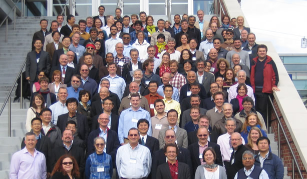

News
REMO participates in the GODAE OceanView Symposium 2013, held in Baltimore, USA

Operational Oceanography aims to address many challenges, with timescales ranging from days to decades, regions ranging from coastal areas to the global ocean and applications from offshore problems to ocean ecosystems. This represents a world issue, which requires broad collaboration. In this context, the GODAE OceanView (GOV) is an international program, which provides coordination and leadership in consolidating and improving global and regional ocean analysis and forecasting systems and the development of new capabilities. The GODAE OceanView Symposium provided an opportunity to review the key scientific achievements of GOV in the last years, to critically examine the outcomes, and to discuss the next steps towards the future of operational ocean analysis and forecasting and its international coordination. REMO was part of the meeting represented by the coordinators Dr. Clemente A. S. Tanajura and Dr. Mauro Cirano from the Federal University of Bahia (UFBA) and Dr. Afonso M. Paiva from the Federal University of Rio de Janeiro (UFRJ) e by the researchers Dr. Fabiola N. Amorim, Bch. Davi Mignac, MSc. Leandro N. Lima and MSc. Alessandro Aguiar from UFBA team. The work presented can be seen in the following links:
http://www.godae.org/~godae-data/Symposium/GOV-posters/S3.1-02-Aguiar.pdf
http://www.godae.org/~godae-data/Symposium/GOV-posters/S3.1-03-Amorim.pdf
http://www.godae.org/~godae-data/Symposium/GOV-posters/S3.4-08-Marta-Almeida.pdf
http://www.godae.org/~godae-data/Symposium/GOV-posters/S3.1-17-Lima.pdf
http://www.godae.org/~godae-data/Symposium/GOV-posters/S3.1-18-Mignac.pdf